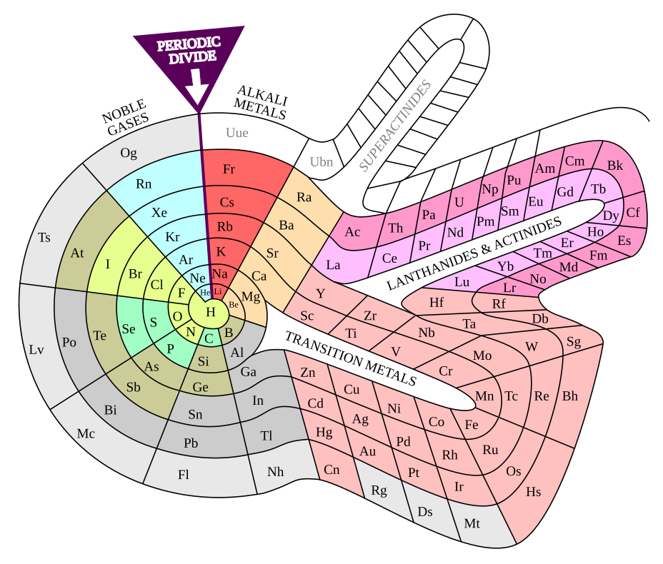
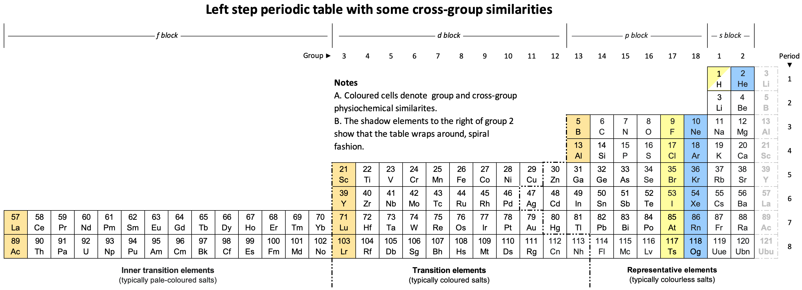
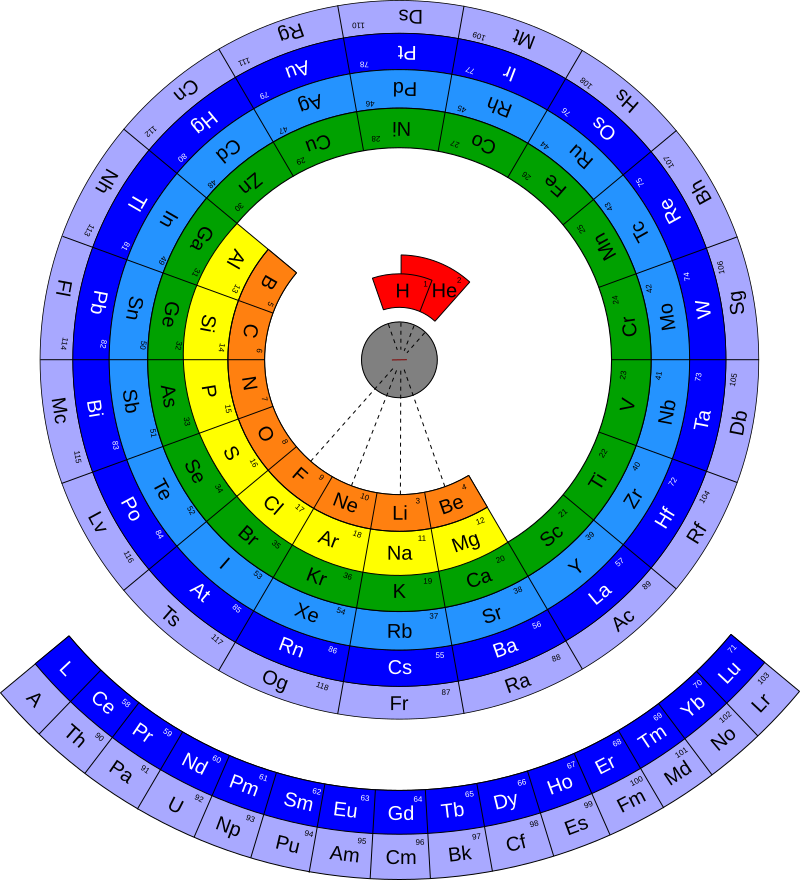

The Periodic Spiral
Session 1 · Part D: the periodic table as a design problem
The periodic table might be the most successful data visualisation ever made: one diagram, on the wall of every chemistry room on Earth, encoding the structure of all matter. But here is the thing it is easy to forget: underneath it, the data is just a one-dimensional list: the elements sorted by atomic number, 1 to 118. Every “table” you have ever seen is a layout choice for that list, and for 150 years chemists have argued about the right one. Spirals, circles, staircases, and the familiar castle-with-two-basements that won.
In this part you will: build the physics that makes the list periodic, look at real alternative designs (and pick a favourite), construct a periodic spiral yourself, and then construct the canonical table, and ask, as designers, why it became the one.
All code runs in your browser. The first cell may take a few seconds while Python loads.
1 · An atom, in three sentences
An element is defined by one number: Z, the count of protons in the nucleus: carbon is “element six”. A neutral atom carries Z electrons, and they do not sit anywhere they like: they stack into shells around the nucleus, and shell n holds at most \(2n^2\) electrons: 2, 8, 18, 32. Almost everything in chemistry follows from the third sentence: only the outermost shell touches the world, so atoms with the same outer arrangement behave alike.
The data for this page is one row per element: number, symbol, name, and a few properties we will meet as we need them:
Shells fill in a fixed order (the aufbau order: sub-shells sorted by \(n+l\), ties broken by \(n\)). Ten lines of code capture it well enough to rebuild the entire table:
(Real atoms have about twenty famous exceptions, where chromium and copper borrow an electron between sub-shells, which we cheerfully ignore: the idealised rule is what the table’s shape encodes.)
Here is sodium drawn the way every textbook draws it, and note that this picture is a diagram, not a photograph of anything:
That lone outer electron is why sodium reacts so violently (sometimes explosively) with water, and why it sits in the same column as lithium and potassium, which have the same lonely arrangement.
2 · Periodicity: the pattern in the list
Walk the list from Z = 1 upward and watch only the outer shell. It fills… closes… and starts again:
This sawtooth is the periodic law. Every row of any periodic table is one tooth; every column collects atoms caught at the same point of the cycle: the groups. Group 1 (one outer electron) are the violent alkali metals; group 18 (closed shell) are the noble gases that react with almost nothing; group 17, one electron short of closing, are the halogens that grab one from anything nearby.
And periodicity is not just electron bookkeeping; it shows up in every measurable property. Prove it to yourself:
Your turn: the size of atoms
The data column radius holds each element’s covalent radius in picometres. Plot radius against Z for all 118 elements, joined by a faint line, and highlight the alkali metals (Z = 3, 11, 19, 37, 55, 87) in one colour and the noble gases (Z = 2, 10, 18, 36, 54, 86) in another. What does the pattern do at each shell closure?
Hint 1. Three layers: a faint ax.plot(Z, radius, ...) line, an ax.scatter of all the points, then two more scatters for the highlighted sets. radius[z - 1] is the radius of element z.
Hint 2. For the highlights, loop for z in ALKALI: ax.scatter([z], [radius[z - 1]], ...), and add ax.annotate(symbol[z - 1], ...) if you want labels.
Fully worked solution:
ALKALI = (3, 11, 19, 37, 55, 87)
NOBLE = (2, 10, 18, 36, 54, 86)
fig, ax = plt.subplots(figsize=(9.5, 4.6))
ax.plot(Z, radius, "-", color="#cccccc", lw=1)
ax.scatter(Z, radius, s=14, color="#666666", zorder=3)
for z in ALKALI:
ax.scatter([z], [radius[z - 1]], s=55, color="#4269d0", zorder=4)
ax.annotate(" " + symbol[z - 1], (z, radius[z - 1]), fontsize=9,
color="#4269d0")
for z in NOBLE:
ax.scatter([z], [radius[z - 1]], s=55, color="#e66852", zorder=4)
ax.set_xlabel("atomic number Z")
ax.set_ylabel("covalent radius (pm)")
ax.set_title("Atomic size is periodic: peaks at the alkali metals")
plt.show()Across each period atoms shrink (the growing nuclear charge pulls the same shell tighter), then at each new shell the size jumps: argon is 96 pm, and one proton later potassium is 196 pm. The sawtooth in size mirrors the sawtooth in valence: same cycle, different property. This is the same cycle Lothar Meyer plotted as atomic volume in 1870, and that Mendeleev could read in 1869 from valences and atomic weights alone, decades before anyone knew electrons existed.
3 · The zoo: one list, many tables
If the data is a cycle, should its picture be a grid, or should it wind? Chemists have proposed hundreds of layouts. Here are four real ones. Look at each and ask the same two questions: what does this design make easy to see? and what does it hide?
Mendeleev’s own table (1869). The original. Periods run down the columns and groups run across the rows (transposed from the modern convention), with gaps deliberately left for elements he predicted must exist (they did: gallium, scandium, germanium).
Benfey’s spiral (1964). The list winds continuously outward from hydrogen; the transition metals and the f-block bulge out as peninsulas. Nothing is ever cut: element 56 is next to element 57.

Janet’s left-step table (1928). Rows end where shells actually close in the aufbau order, so the blocks form perfect staircase steps. Physicists tend to love it; chemists complain that helium ends up above beryllium.

A circular table. Periods as concentric rings: the cycle is explicit, at the price of the outer rings stretching and the inner ones cramping.

Before reading on, decide (seriously, pick one) which of the four you would hang in a classroom, and write down (a note on paper is fine) your one-sentence reason. Then note one thing your favourite makes harder to see than the standard table does. You will need both notes at the end of the page.
4 · Build the spiral
The spiral’s claim is that the element list is a cycle with no breaks, so draw it as one. Give every period one full turn: an element’s angle is its fraction of the way through its period, and its radius grows steadily outward. Colour by block (which kind of sub-shell is filling: the four “districts” of the table):
Study what your spiral wins and loses. Wins: the sequence is unbroken (no gap between Ba and La: the f-block is just part of the winding); the blocks appear as coloured arcs (the lone gold dot opening each purple arc is real chemistry showing through: lanthanum and actinium actually take a d electron before the f shell starts filling); every shell closure lands at the same angle, so the noble gases form a perfect ray. Loses: almost every other group is misaligned: lithium and potassium sit at different angles because their periods have different lengths, so “reading down a group”, the single most useful act chemists perform, no longer works. Benfey’s design (above) fixes this by distorting the spiral into bulges, buying back group alignment by spending the clean geometry. Every design pays for what it shows.
5 · Build the canonical table
Now the winner. Its layout rule is: new row at every shell closure, and columns collect equal outer-shell counts: rows are periods, columns are groups. Watch what happens with just the first 18 elements:
There it is: the strange moat between beryllium and boron. The gap exists because period 4 will need eighteen columns while periods 2 and 3 only have eight members; the layout reserves space for columns that do not exist yet. That emptiness is the design’s masterstroke: gaps in a grid are predictions. Mendeleev’s version of this move (holes left under aluminium and silicon) told the world exactly what to look for, and gallium (1875) and germanium (1886) walked into them with almost exactly the predicted properties. Few charts in history have predicted anything; this one predicted matter.
Your turn: the whole thing
Build the full canonical table, all 118 elements. You have Z, symbol, period, group and category (plus cat_colours, the conventional colour for each category). Two things need decisions:
- Main grid: elements with a
groupgo at columngroup, rowperiod, exactly like the 18-element version. - The f-block: the lanthanides (Z 57–71) and actinides (Z 89–103) have
group = None. The canonical design exiles them to two footnote rows below the table. Place them there (15 per row) and choose the rows’ vertical position yourself.
Colour every cell by its category, put the symbol (and, if you like, Z) in each cell, and add a legend.
Hint 1. cell_position has three cases: a real group (use it with period directly), a lanthanide (57 ≤ Z ≤ 71), and an actinide. The footnote rows need y values below row 7; leave a blank row as a visual separator.
Hint 2. Within a footnote row the column should step with Z: something of the shape constant + (Z[i] - 57) spreads the fifteen lanthanides across fifteen consecutive columns. Pick the constant so they sit roughly under the middle of the table.
How to know you got it. No solution button: this table is yours. Hold your result next to any printed periodic table: you should count 18 columns, 7 main rows, and two footnote rows of 15; hydrogen alone at top-left, helium at top-right above the noble-gas column, and the colour regions forming solid blocks, not confetti. Two things are worth noticing about what you just built. First, you never told it any chemistry: group and period came from shell-counting, yet sodium landed under lithium. Second, look at the two rows you exiled: the footnote is a lie of layout (element 57 is not really “below” the table; it belongs between 56 and 72), told to keep the table printable. The spiral you built in Section 4 tells the truth about continuity and lies about groups; the grid does the opposite. Which lie you prefer is a design decision. Now check the notes you made in Section 3 and see whether you still agree with yourself.
6 · Why this one won
The canonical table beat the spirals for reasons worth naming, because they are the same reasons any visualisation wins:
- It aligns the most-used comparison. Chemists constantly reason “down a group”: same outer shell, same reactions. The grid makes that a straight vertical scan; the spiral makes it a hunt.
- It is rectangular. It fits pages, posters, screens and blackboards; every cell has room for symbol, number, and mass. Most spiral designs waste half their canvas and cramp their inner turns.
- Its gaps did work. Empty grid cells are legible predictions; a spiral closes seamlessly over its own ignorance.
- And then it won for winning. After a century on every classroom wall, familiarity itself became the strongest argument: a standard everyone can read beats a design a few prefer (ask the QWERTY keyboard).
But “won” does not mean “true”. The grid’s clean rows are punctured by a gap that means nothing physical, its f-block sits in exile, and the cycle at the heart of the periodic law (the thing your sawtooth plots showed most clearly) is invisible unless you already know to see it. The spiral shows the cycle and hides the groups. Janet’s steps show the physics and misplace helium. Every layout of this list is an argument about what matters; the one on the wall is just the argument that won.
Sources and serving notes
elements.csvis generated from the mendeleev Python package (v1.2): IUPAC groups and periods, Pyykkö covalent radii (all 118 elements, one consistent convention), Pauling electronegativities. The f-block rows carry no group number, following the common 18-column convention.- The
configuration()function implements the idealised Madelung (aufbau) rule and ignores the ~20 real-world exceptions (Cr, Cu, Nb, …); none of them change where any element sits in the table. - Images, all from Wikimedia Commons: Mendeleev’s 1869 table (redrawn by NikNaks, public domain); Benfey-style element spiral by DePiep (CC BY-SA 3.0); left-step table by Sandbh (CC BY-SA 4.0); circular table by Cbuckley (CC BY 3.0).
- Category colours follow the long-standing Wikipedia convention, used here deliberately: this page is about the canonical design, and its colours are part of the canon. Note they are not a colour-blind-safe palette; the table survives that because position and text labels, not colour, carry the structure (worth noticing as a design lesson in itself).